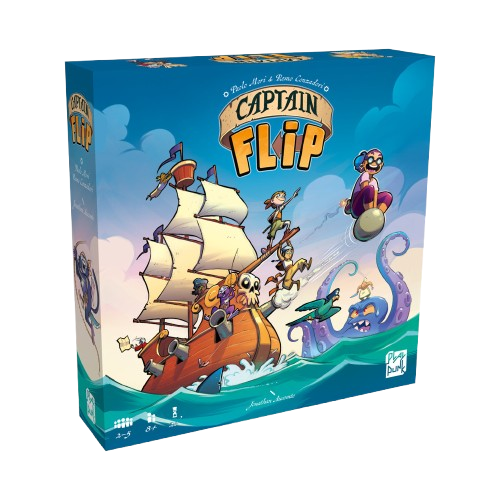

Captain Flip

Un jeu d'arrangement et de retournement de tuiles.
Conseils, critiques, listes d'envie, bons plans, on espère que vous trouverez votre bonheur.
Un jeu d'arrangement et de retournement de tuiles.
Un jeu de cartes où il vous faudra rassembler les cartes de mêmes valeurs.
Enquêtez pour trouver la maladie de votre patient et faites tout pour qu'il reste en vie.